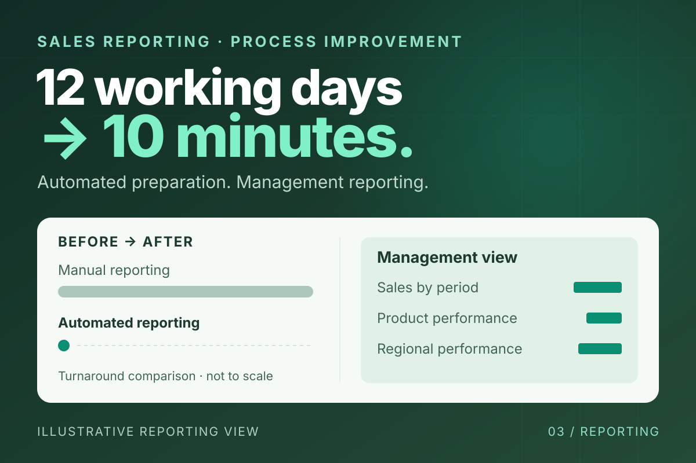

Sales reporting / Process improvement / Invento Software Limited
From 12 working days to 10 minutes
Automating sales reporting through ETL and Power BI, reducing the time spent preparing reports for management.

01The problem
Preparing sales reports took 12 working days. That preparation cycle stood between the underlying sales data and a report management could use.
The opportunity was to automate the reporting process and shorten the wait for useful information.
02My role
As a Data Analyst at Invento Software Limited during 2023–2024, I worked on ETL, Power BI dashboards, and management reporting.
I automated sales reporting, connecting data preparation with the reporting output rather than treating each report as a fresh manual exercise.
03What changed
- Automated data preparation. ETL moved the preparation work into a repeatable reporting process.
- Management dashboards. Power BI provided the reporting layer for reviewing sales information.
- A shorter reporting cycle. The focus was the time from preparing sales data to producing a usable management report.
04Results
The operational result: sales reporting that took working days to prepare could be produced in minutes.
The comparison refers to report preparation time. The illustration above shows the workflow without exposing client sales data.
Let's find the bottleneck in your operations.
A 30-minute call is enough to map where work gets stuck and agree on a practical first step.